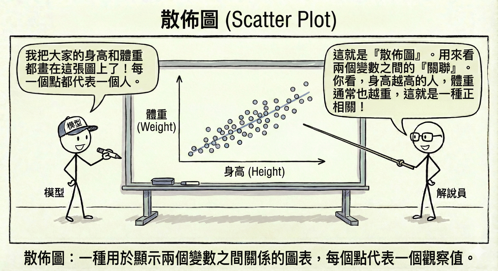
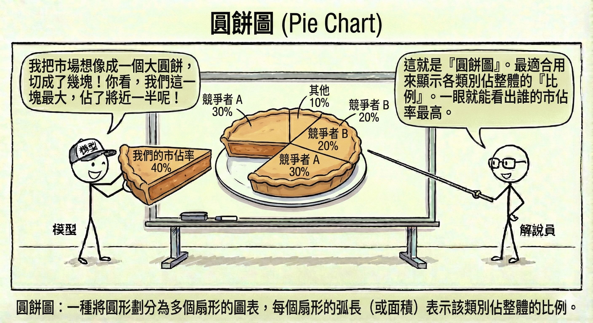
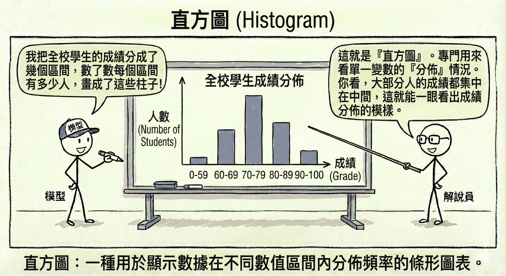
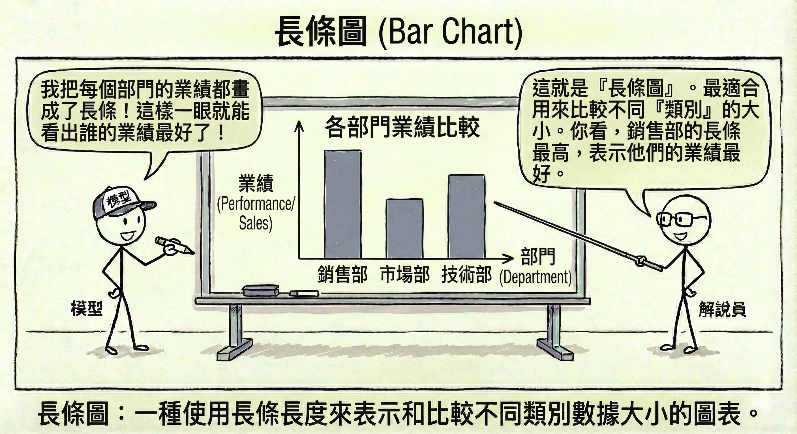
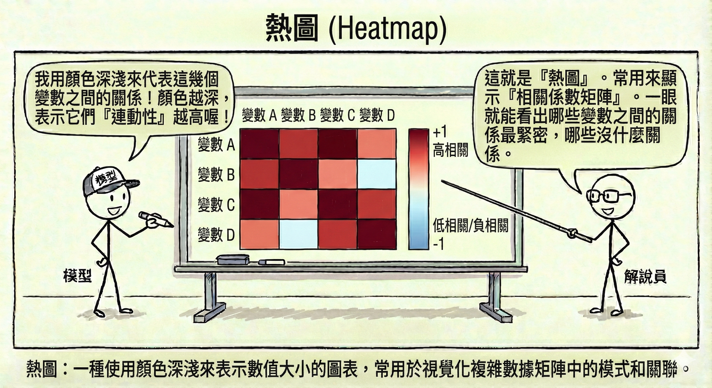
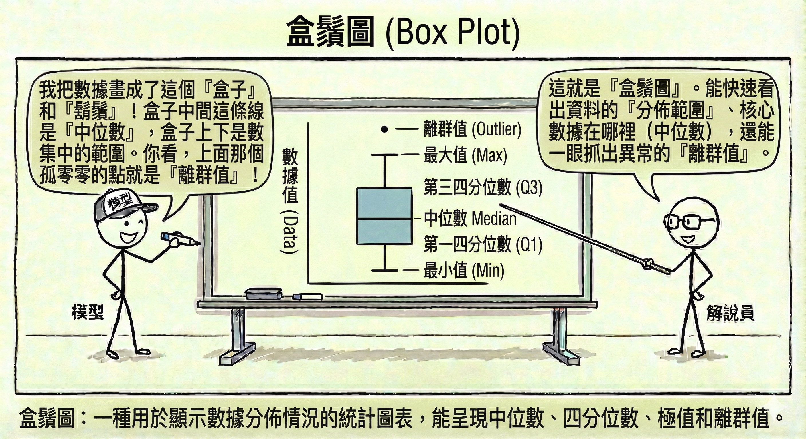

4 數據處理生命週期與架構
在 AI 的世界裡，有一句名言：「垃圾進，垃圾出 (Garbage In, Garbage Out, GIGO)」。無論你的模型多麼先進，如果餵給它的資料品質低劣，結果也將毫無價值。本章將探討資料如何從原始狀態，經過層層處理，最終變成模型可用的燃料。
4.1 3.1 資料管道 (Data Pipeline)
資料管道就像是城市的供水系統。水源（原始資料）可能來自水庫、河流或地下水，必須經過過濾、消毒、輸送（處理過程），最後才能從家裡的水龍頭流出乾淨的自來水（可用資料）。
4.1.1 ETL (Extract-Transform-Load) 架構
這是最傳統也最常見的資料處理流程，特別適用於結構化資料（如資料庫表格）。
- 資料擷取 (Extract)：從各種來源（資料庫、API、檔案）收集資料。就像去市場買菜。
- 資料轉換 (Transform)：清洗、格式化、計算衍生欄位。就像在廚房備料（洗菜、切肉、醃製）。這是最耗時的步驟。
- 資料載入 (Load)：將處理好的資料存入目標系統（通常是資料倉儲 Data Warehouse）。就像將煮好的菜端上桌。
- 特點：先處理再儲存，確保進入倉庫的資料都是乾淨、格式統一的。但若需求變更，需要重新設計轉換流程。
4.1.2 ELT (Extract-Load-Transform) 架構與資料湖 (Data Lake)
隨著大數據 (Big Data) 的興起，資料量大到無法先處理再儲存，或者資料是非結構化的（如日誌、圖片、影片），ELT 架構應運而生。
- 流程：先把所有資料（不管髒不髒）全部抓進來（Extract & Load），存放在一個巨大的儲存庫中，稱為資料湖 (Data Lake)。等到需要分析時，再進行轉換 (Transform)。
- 類比：這就像搬家。先把舊家的東西全部裝箱搬到新家（Load），等到要用某個東西時，再打開箱子整理（Transform）。
- 優勢：靈活、速度快，保留了原始資料的細節。
4.1.3 批次處理 vs. 串流處理
- 批次處理 (Batch Processing)：累積一段時間的資料後，一次性處理。
- 類比：公車。要等到時刻表到了或人坐滿了才發車。
- 適用：日報表、月結算、不需要即時性的分析。
- 串流處理 (Streaming Processing)：資料一產生就立刻處理。
- 類比：計程車。隨叫隨走，來一個載一個。
- 適用：即時詐欺偵測、股市交易監控、即時推薦系統。
4.2 3.2 探索性資料分析 (EDA)
在正式建模之前，我們必須先「認識」資料。探索性資料分析 (Exploratory Data Analysis, EDA) 就像是相親，你需要透過各種方式了解對方的個性、習慣和背景。
4.2.1 統計摘要 (Descriptive Statistics)
用數字來描述資料的整體樣貌。
- 集中趨勢：尋找資料的「中心」。
- 平均數 (Mean)：所有數值加總除以個數。容易受極端值影響（如比爾蓋茲走進酒吧，平均財富瞬間飆升）。
- 中位數 (Median)：將資料由小到大排列，位於中間的那個數。代表「一般人」的水準，不受極端值影響。
- 眾數 (Mode)：出現次數最多的數值。
- 離散程度：資料分佈得有多「散」。
- 標準差 (Standard Deviation)：數值與平均數的平均距離。標準差越大，代表資料越參差不齊。
- 四分位數 (Quartiles)：將資料切成四等份的切點。
- 偏態 (Skewness)：資料分佈是偏左還是偏右。
4.2.2 資料視覺化決策邏輯
一張圖勝過千言萬語，但選錯圖表會造成誤導。
散佈圖 (Scatter Plot)：看兩個變數之間的關聯（例如：身高 vs. 體重）。

圓餅圖 (Pie Chart)：顯示各類別佔整體的比例（例如：市佔率）。

折線圖 (Line Chart)：看時間趨勢（例如：股價走勢、氣溫變化）。
直方圖 (Histogram)：看單一變數的分佈情況（例如：全校學生的成績分佈）。

長條圖 (Bar Chart)：比較不同類別的大小（例如：各部門的業績比較）。

熱圖 (Heatmap)：用顏色深淺表示數值大小，常用於顯示相關係數矩陣（哪些變數連動性高）。

盒鬚圖 (Box Plot)：快速看出資料的分佈範圍、中位數以及離群值。

4.3 3.3 資料清理與品質管理
現實世界的資料往往是髒亂的。資料清理 (Data Cleaning) 通常佔據資料科學家 80% 的時間。
4.3.1 缺失值處理 (Missing Values)
資料中有空格怎麼辦？
- 刪除法：如果缺失比例很低，直接刪除該筆資料。但可能會丟失重要資訊。
- 插補法 (Imputation)：用「猜」的。
- 用平均數、中位數填補（最簡單）。
- 用機器學習模型預測缺失值（較精準）。
4.3.2 異常值/離群值處理 (Outliers)
有些資料點明顯與眾不同，例如身高 300 公分的人，或是年齡 200 歲。
- 偵測方法：
- Z-score：超過平均數 3 個標準差以外的數值。
- 四分位距 (IQR)：在盒鬚圖鬚鬚之外的點。
- 處理方式：
- 如果是輸入錯誤（如年齡 200），直接修正或刪除。
- 如果是真實存在的極端值（如億萬富翁的收入），可以使用對數轉換 (Log Transformation) 來壓縮數值，減少其對模型的影響。
4.3.3 數據一致性處理
- 欄位標準化：將 “Taipei”, “Taipei City”, “TP” 統一為 “Taipei”。
- 去重 (Deduplication)：刪除重複的紀錄。
4.3.4 資料匿名化與隱私保護 (PII 處理)
在處理涉及個人隱私 (PII, Personally Identifiable Information) 的資料時，必須進行去識別化。 * 遮罩 (Masking)：將姓名顯示為 “王O明”。 * 泛化 (Generalization)：將年齡 “25 歲” 改為 “20-30 歲區間”。